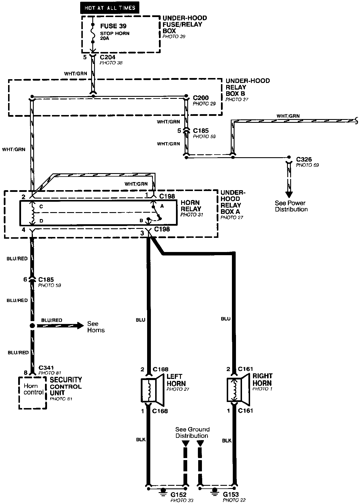
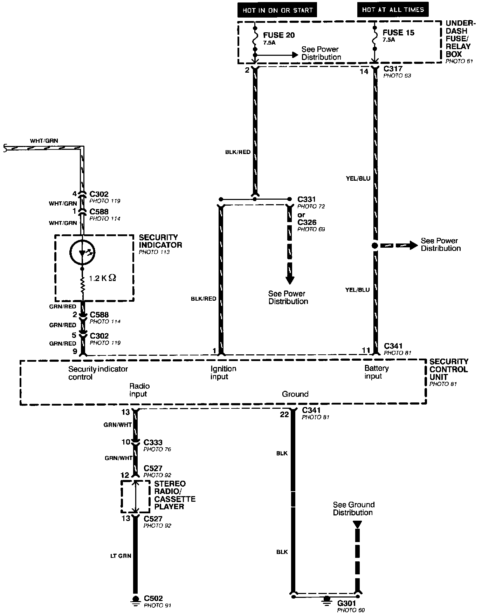
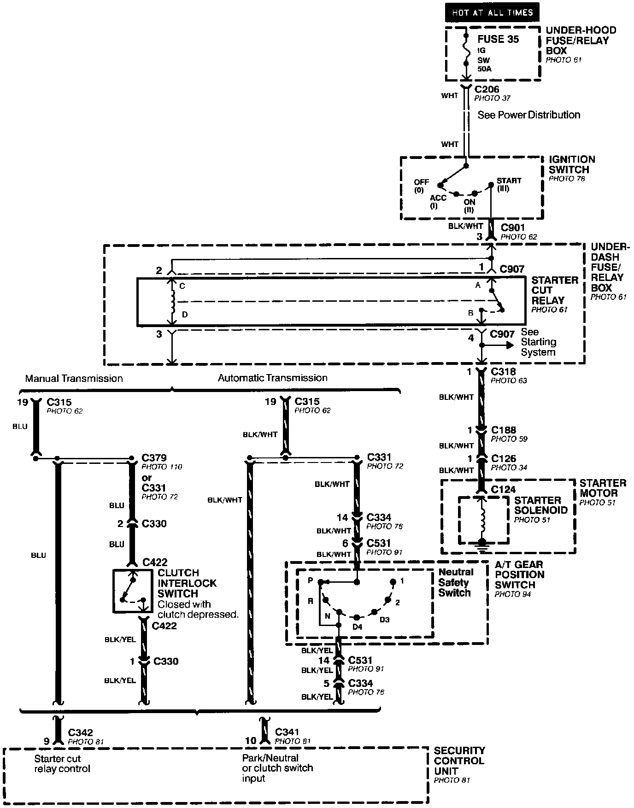
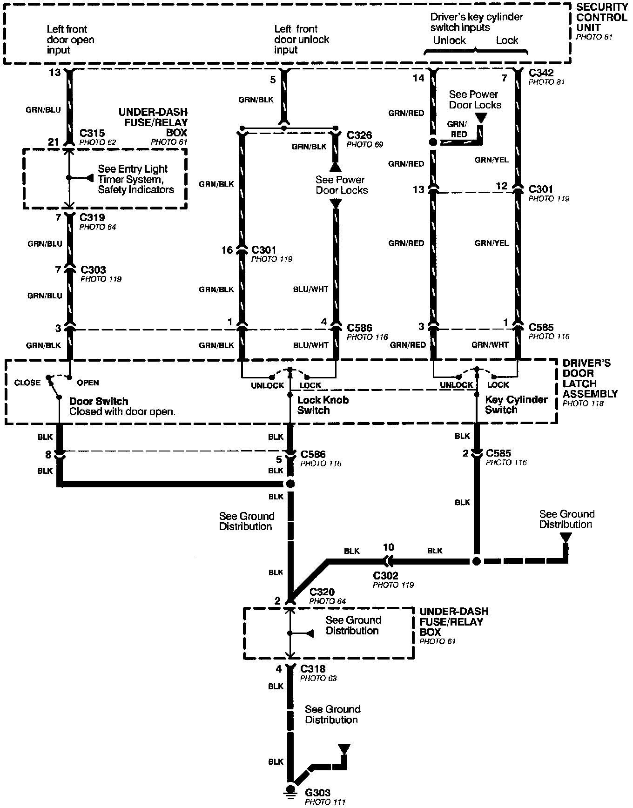
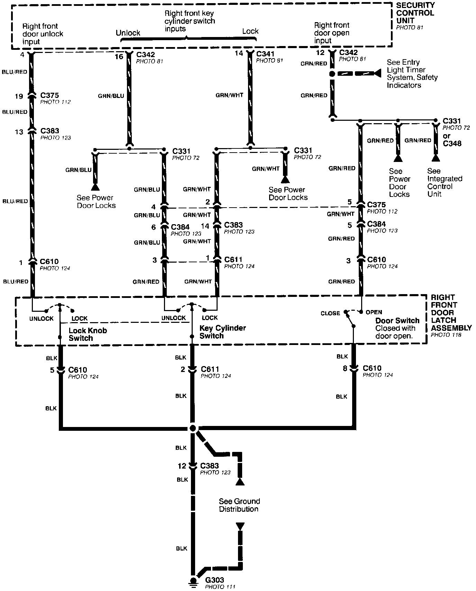
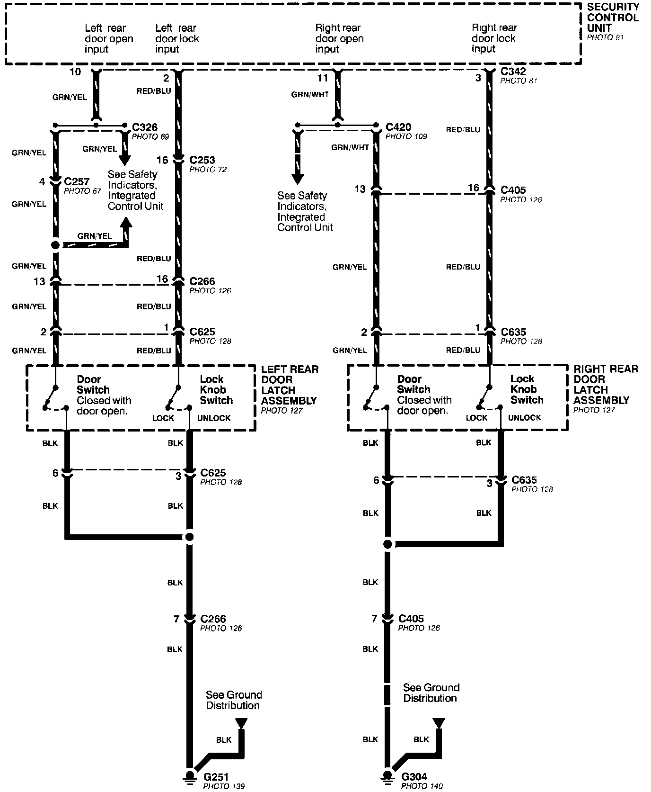
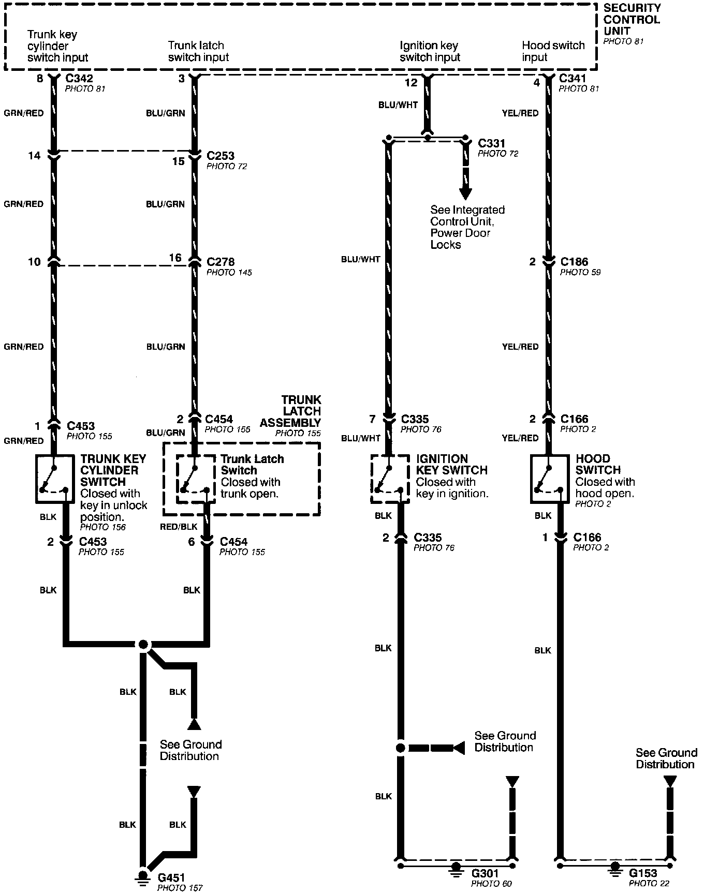
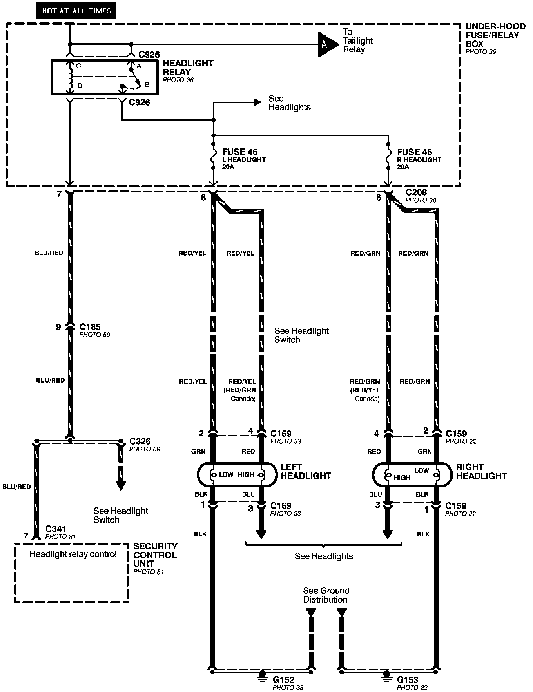
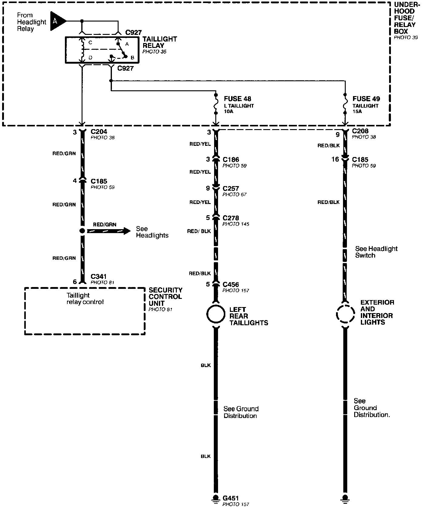

Antitheft and Alarm Systems
Security System (Part 1 Of 9):

Security System (Part 2 Of 9):

Security System (Part 3 Of 9):

Security System (Part 4 Of 9):

Security System (Part 5 Of 9):

Security System (Part 6 Of 9):

Security System (Part 7 Of 9):

Security System (Part 8 Of 9):

Security System (Part 9 Of 9):
